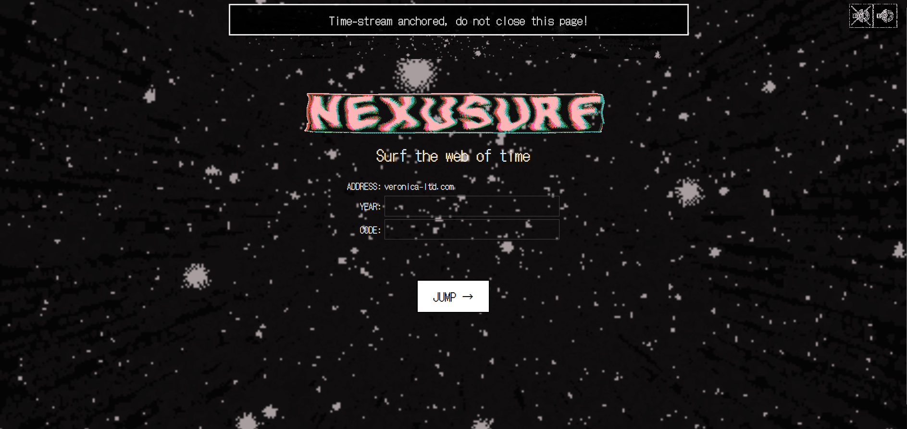
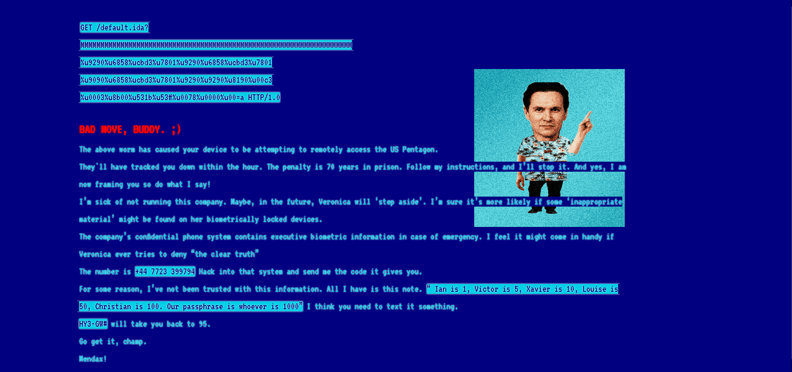
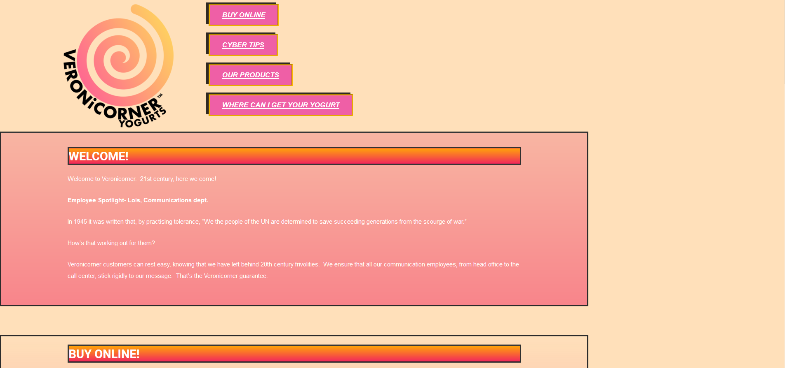
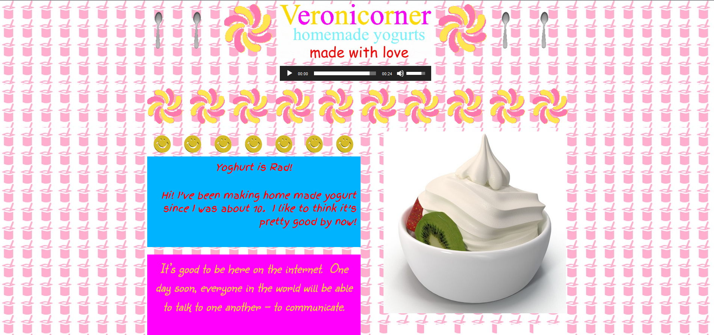
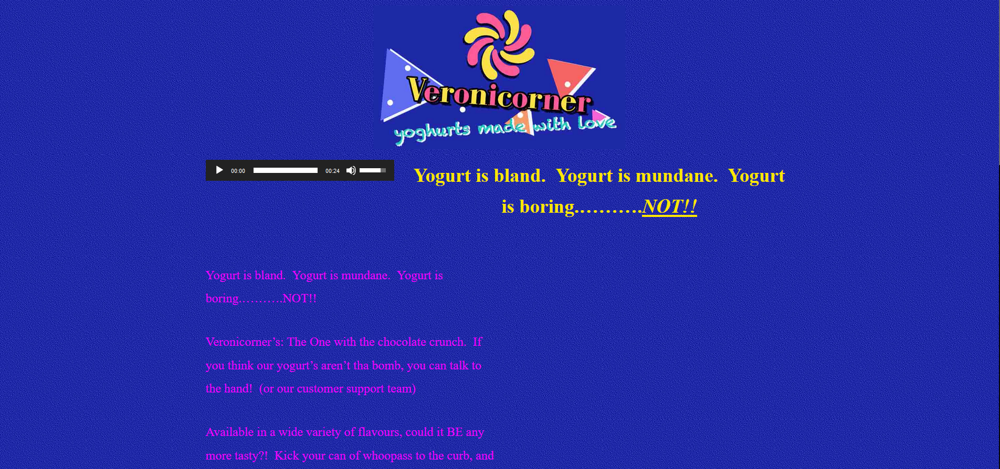

Nexusurf (2021, Modern Fables)
Nexusurf was an online puzzle game/scavenger hunt based around the idea of visiting one website at different points in time. Players would scour the websites for clues while interacting with characters and systems over email and text. Puzzles would send players back and forth between these websites, forcing them to infer solutions for puzzles by regarding the passage of time that was supposed to have happened between them and its implications.The game was totally automated and gm-less and could be played at any time.




